QuiverAI — casos que cortamos
Loops de 6s. UC1: el agente dispara hacia internet y el borde lo para (L3, un sandbox). UC2: salta al vecino, toca la DB, y se corta toda agentnet (L4).
UC1 · Exfil — hacia fuera, cortamos este agente

UC2 · Lateral — vecino → DB, cortamos el entorno
Kill-switch y escalera
La escalera viva (nivel + contención + llamada) está en ladder-live.html. El loop de 6s se queda como ilustración.

Desenchufar (4s)

L1→L5 (6s)